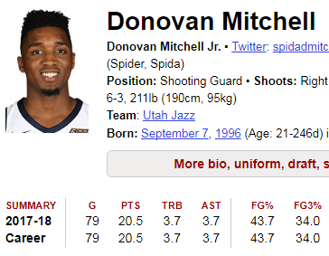
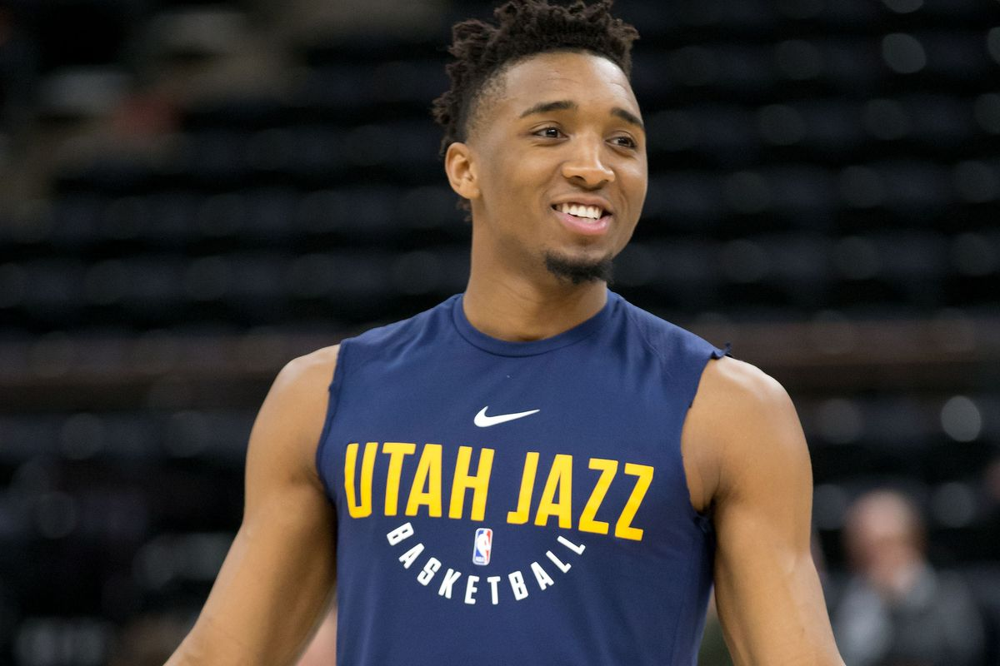

This part of the website will be talking about how Donovan Mitchell*
Donovan Mitchell is scoring the most amount of points as a rookie. The stats from Donovan Rookie Year is 20.5 pts a game. It's not like Donovan is scoring on avarge guards he is scoring on elite guards every week. Donovan Mitchell is carring the Utah Jazz every single night because he dosen't have an all star to bounce on them for help like Ben Simmons do.

One reason Donovan Mitchell should be ROTY because he is on the hardest conference and thats the western. Donovan Mitchell has to go against the best guards in the leauge on a regular basis.
